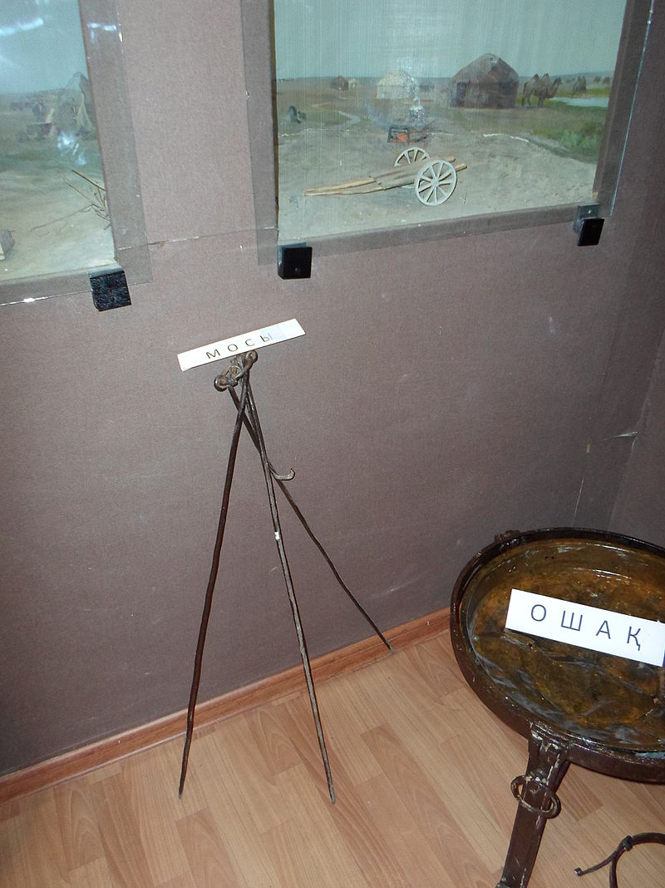
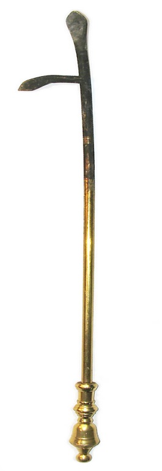
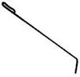
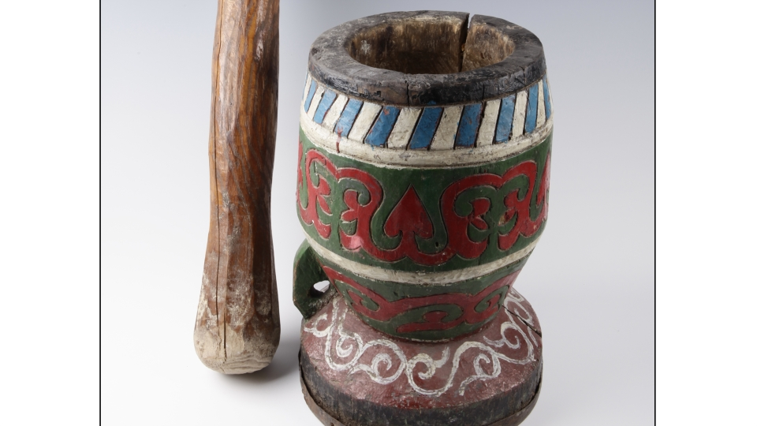

Тұрмыста қолданатын құрал- жабдықтар
Мосы
Мосы
— шөңке асу үшін немесе өрмек жібін
кептіру үшін пайдаланылатын құрал. Мосы
үш бөлшектен тұрады. Олар — мосының
сирағы, тілі (ілгегі) және шығыршық.
Мосының үш сирағы болады. Оны темірден
немесе ағаштан жасайды. Жоғары ұштарынан
тесік жасалып, олар темір шығыршық
арқылы қосылады. Шығыршыкқа шәугімнің
тұтқасы не күзудің (өрмек тоқығанда)
бауы ілінетін тіл (ілгек) бекітіледі.
Мосының сирағы 1, 5 - 2 метрге дейін болады.
Шағын мосыны ас - су қайнату үшін серуенге
шыққанда қазір де пайдаланады.

Ошақ
Ошақ
— қазан орнатуға арналған тұғыр. Ошақты
қазанның астына от жағу үшін оны көтеріп
тұратындай етіп қалайды. Жасалуына
байланысты ошақтың жерошақ, тасошақ,
темірошақ, қазандық сияқты түрлері бар.
Жерден қазылып жасалынған ошақ түрін
— жерошақ деп атаған. Тасошақты бірнеше
ірі тастан шеңбер жасай орналастыра
қалап көтереді. Ал темірошақ — қазанның
түбіне киілетіндей арнайы өлшеніп
жасалған темір шеңберге бірнеше аяқ
орнатылған тұғыр. Қазандықты тастардан
немесе кесектерден қалап істейді. Оның
бір жағынан отын салу үшін ауызы
қалдырылып, қарсы жағынан түтін шығатын
мұржа жасалады.
Көсеу
Көсеу
— тұрмысқа қажетті жабдық. Пештегі,
жерошақтағы ыстық шаланы, шоқты
қағыстырып, от жағу үшін және шоқ алу
үшін қолданады. Көсеу ағаштан не темірден
жасалады. Көсеуді ұстаханаларда ұсталар
жасап, халық тұрмысында пайдаланған.
Қазіргі кезде көсеуді ауылдық жерлерде
кеңінен қолданады.


Өре
Өре
— ірімшік, құрт, т. б. тағамдарды кептіруге
арналған сөре. Өреде төрт аша сирақ,
төрт жанағаш болады. Сирақтарын жерге
қаққаннан кейін екі ұзын жанағашты
ашаларға кигізіп, олардың басына қысқа
жанағаштарды көлденең таңады. Оның
үстіне ши жайып, кептірілмек тағам
тізіледі. Өреше ши ұзын болса, онын
екінші шетімен тағамды құс шоқып кетпеу
үшін бетін жауып қояды.
Келі-келсап
Келі-келсап
— дәнді қауызынан арылту және ұнтақтауға
арналып қатты ағаштан (кейде тастан
қашалып) жасалған аспап. Қазақ халқы
келі-келсаппен тарыны, бидайды, т. б.
дәнді дақылдарды түйіп, жент, жарма,
талқан дайындаған. Келі-келсап екі
бөліктен тұрады. Бірінші бөлігі келі —
ұнтақтайтын дәнді салуға арналған ыдыс.
Келіні жуан әрі қатты, тұтас ағаштан
үңгіп жасайды. Жерге орнықты болсын
деп, түп жағын қалыңдау етіп қалдырады.
Ішін әбден үңгіп болғаннан кейін ағаш
тегіс және қатты болсын деп отқа қарып,
іші - сыртына қойдың құйрық майын не
түйе қомының майын сіңіре жағады, Қатты
соққыдан жарылып кетпеу үшін сыртын
көн терімен қаптайды. Ал екінші бөлігі
— келсап. Келсап — ұзындығы 1 м, диаметрі
15 см - дей жұмыр ағаш. Келсаппен келі
ішіндегі дақылды түйіп, ұнтақтайды.

Қазанқап
Қазанқап
— көшіп - қону кезінде қазанды тасуға
арналған бұйым. Қазанқап киізден пішіні
төрт бұрышты етіп, ауыз жақ беті қазанның
көлеміне қарай кеңдеу етіп тігіледі.
Сонан соң киіздің сыртынан қалыңдау
бір түсті матамен қапталады. Үстіне
қызыл не көк матадан ою - өрнек жапсырылады,
кейде түрлі - түсті жіппен де кестеленеді.
Ауыз жағына ілмешекті баулық жасалынып,
шетіне шашақ салынады. Көшпелі қазақтар
қазанқапты жайшылықта киіз үйдің сол
жақ босағасына таман, кереге басына
ілген.
Ұршық
— жіп иіретін құрал. Ұршық ағаштан
жасалынады. Ол екі бөліктен тұрады:
біріншісі — басы немесе қаңғалақ,
екіншісі — сабы. Ұршықтың басы, көбінесе,
тастан қашалады не қорғасыннан құйылады,
Оның дәл ортасынан тесік тесіліп,
ұршықтың сабы өткізіледі. Ұршықтың
сабын жасау үшін ағашты жұмырлап жонып,
ұшын үшкірлейді. Жоғарғы ұшына таяу
жерінен тесік теседі де, оған жіңішке
шырпыдан көлденең мұрындық
өткізеді.
Ұршықтың сабын айналдыру
арқылы қозғалысқа ендіріп, ұршық басының
екпінімен жіп иіріледі. Иірілген жіпті
сабының жоғарғы жағына тізбектеп орап
отырады. Содан кейін иірілген жіптерді
бірнеше түстерге бояп, тұрмыста
пайдаланады.